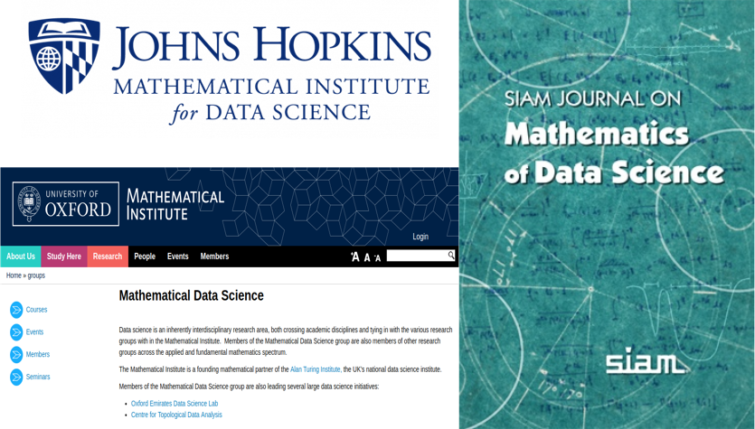
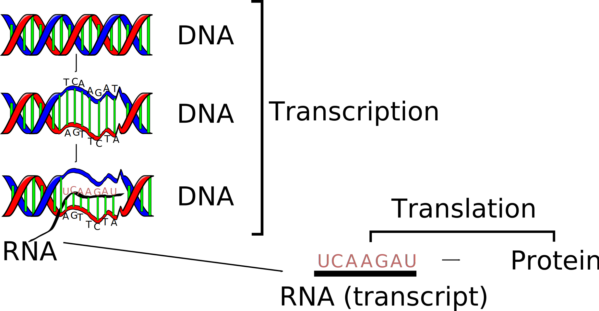
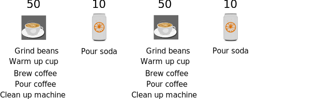

COSC241: Lecture 22
Biological Data Science
Alex Gavryushkin

17 May 2018
Handouts
- All slides are online at
- You can follow this lecture at
Outline
- What is data science?
- What is molecular biology?
- How big is big? Scalability
- Online algorithms
1. Data Science (my take)
ML = Machine Learning
CoSt = Computational Statistics
AS = Applied Statistics

Abraham Wald
R. Siegmund-Schultze (2003). Military Work in Mathematics 1914–1945: An Attempt at an International Perspective. Mathematics and War, edited by Bernhelm Booß-Bavnbek and Jens Høyrup, 23–82. DOI: 10.1007/978-3-0348-8093-0_2
2. Molecular biology: crash course
Does this matter?
- Genetics diseases, e.g. cancer
- Antibiotic resistance
- Virus outbreaks
- Food
- Ecology
- Information storage?
- . . .
Why is it suddenly a thing?

I still don't care. Can I go?
Short answer is NO — biological data science skills are highly transferable:
- nosy data
- visualisation
- communication
- high-performance computing
Enough biology
- Let $G$ be the set of binary (quaternary in reality) strings of length $n$.
- Elements of $G$ are called genotypes.
- A function $w: G \to \mathbb R^+$ is called a fitness landscape.
- For $g \in G$, $w(g)$ is called fitness of the genotype $g$.

Reality
Scalability: synthetic lethal pairs

How many pairs of genes are there in the human genome?
Online algorithms to improve computational performance
- The traditional way is to make the algorithm more efficient
- When the same algorithm has to be re-run routinely, we can economize by making the algorithm slower and doing more!
- This approach is known as online
Online algorithms
Online algorithms

Online algorithms

Online algorithms
Online algorithms

Online algorithms

Online algorithms
Online algorithms